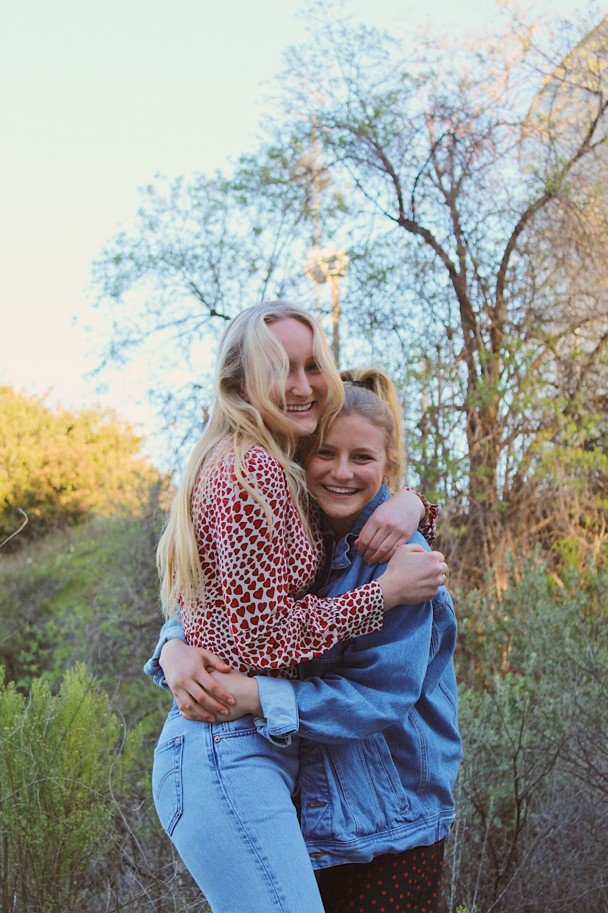
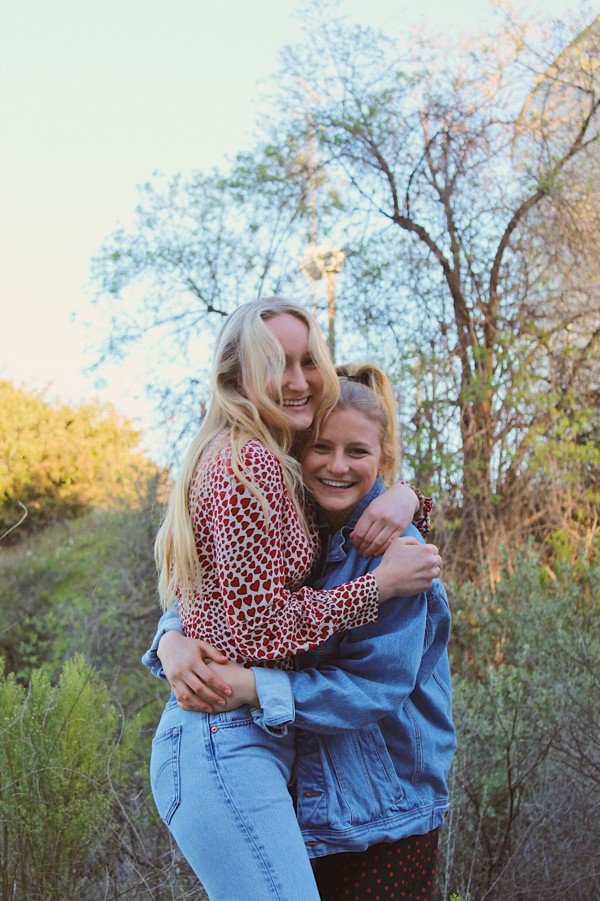

Photography
On the side, I enjoy photography. Here are some of my flicks and you can also check out my photography Instagram.
On the side, I enjoy photography. Here are some of my flicks and you can also check out my photography Instagram.

 
